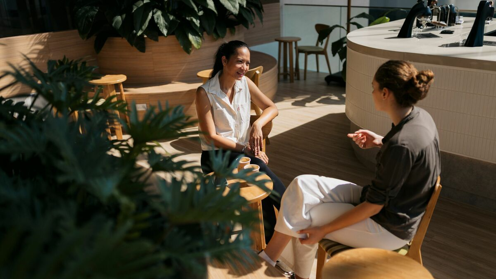

Dorong dirimu keluar dari zona nyaman dengan tantangan kecil yang berdampak besar bagi pertumbuhan mental dan fisikmu. Ambil misimu hari ini!
Kesehatan Mental
Detoks Media Sosial 24 Jam
Berani lepaskan gawai selama seharian penuh? Temukan kembali ketenangan pikiran tanpa gangguan notifikasi dan perbandingan sosial harian.
Aktivitas Fisik
Gerak Aktif: 10.000 Langkah
Tingkatkan energi dan suasana hati dengan tantangan berjalan kaki. Aktivitas sederhana ini terbukti ampuh mengurangi stres harian.

Sosial
Satu Kebaikan Tanpa Nama
Lakukan satu hal baik untuk orang lain hari ini tanpa memberitahu siapa pun. Kebaikan kecil bisa memberikan kebahagiaan yang besar.
Detoks Media Sosial 24 Jam
Kategori: Mental Health • Tingkat: Menantang
Tantangan ini mengajak Anda untuk benar-benar hadir di dunia nyata. Sering kali, kita merasa cemas karena terus membandingkan hidup kita dengan apa yang kita lihat di layar digital.
Cara Melakukan: Matikan semua notifikasi media sosial atau hapus aplikasinya sementara selama 24 jam. Gunakan waktu luang untuk membaca buku, berjalan-jalan, atau mengobrol langsung dengan keluarga tanpa ada gawai di tangan.
Gerak Aktif: 10.000 Langkah
Kategori: Fisik • Tingkat: Sedang
Tubuh yang bergerak aktif akan memicu hormon kebahagiaan. 10.000 langkah adalah target ideal harian untuk menjaga kesehatan jantung serta metabolisme tubuh tetap prima.
Cara Melakukan: Gunakan aplikasi pedometer di ponsel Anda. Pilihlah jalan kaki saat pergi ke tempat yang dekat, gunakan tangga alih-alih lift, dan sempatkan berkeliling di sekitar lingkungan rumah pada sore hari.
Satu Kebaikan Tanpa Nama
Kategori: Sosial • Tingkat: Mudah
Berbuat baik secara anonim mengajarkan kita tentang arti ketulusan yang murni. Ini bukan tentang mengejar pujian, melainkan tentang dampak positif yang kita berikan kepada orang lain.
Cara Melakukan: Bisa sesederhana memberikan tip lebih kepada kurir pengantar makanan, merapikan barang yang berantakan di tempat umum, atau meninggalkan pesan penyemangat di meja teman secara diam-diam.